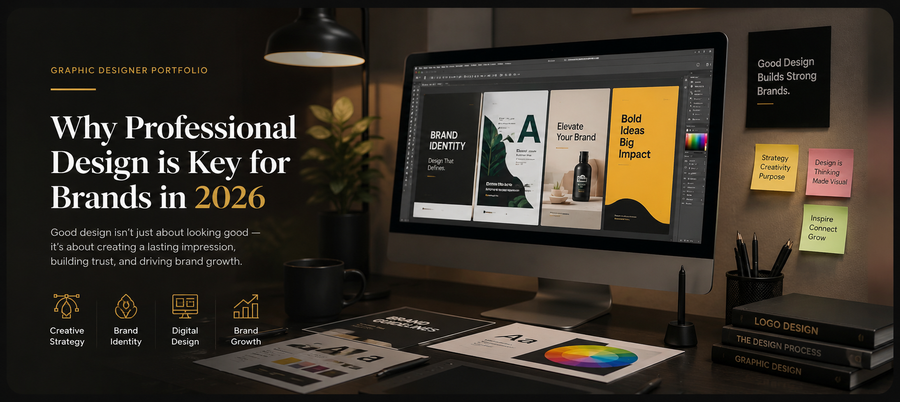

Every day, people scroll through countless social media posts, advertisements, websites, and marketing campaigns. As a result, businesses have only a few seconds to capture attention and make a positive impression. Therefore, professional design has become one of the most valuable investments a brand can make in 2026.
Today’s customers expect brands to look professional, trustworthy, and consistent across every platform. Moreover, they often form opinions about a business before reading a single word of content. Because of this, strong visual communication can directly influence whether a customer chooses your brand or a competitor.
This is where a professional graphic designer portfolio becomes important. Not only does it showcase creativity, but it also demonstrates the ability to solve business problems through design. Furthermore, it helps businesses find designers who understand branding, marketing, and customer engagement.
As a freelance graphic designer based in Jalandhar, I help businesses create powerful visual identities that attract customers and strengthen brand recognition. Through my work at SwayamGoel.in, I provide creative solutions that combine aesthetics with strategy. Consequently, businesses can communicate more effectively and achieve better results.
The digital landscape continues to evolve rapidly. Therefore, businesses must adapt to changing customer expectations. While quality products and services remain essential, visual presentation plays an equally important role in attracting and retaining customers.
Professional design helps businesses establish credibility. For example, a well-designed website immediately creates trust and encourages visitors to explore further. Similarly, consistent branding across social media platforms reinforces professionalism and reliability.
Moreover, professional design improves user experience. When information is organized clearly and visually appealing, customers can find what they need more easily. As a result, they are more likely to engage with the brand and take action.
In addition, businesses that invest in design often enjoy stronger customer loyalty. Because customers remember visually appealing brands, they are more likely to return in the future. Consequently, professional design contributes directly to long-term business growth.
A graphic designer portfolio serves as proof of expertise. While a designer can describe their skills, clients prefer to see real examples of work. Therefore, a strong portfolio often becomes the deciding factor when choosing a designer.
A professional portfolio showcases:
Furthermore, a portfolio demonstrates creativity, attention to detail, and problem-solving abilities. Rather than simply displaying attractive visuals, it shows how design solutions help businesses achieve specific goals.
As a result, businesses searching for a graphic designer near me often review portfolios before making contact. They want confidence that the designer can deliver professional results and understand their industry.
Trust is one of the most important factors in business success. However, trust is not built overnight. Instead, it develops through consistent experiences and professional presentation.
Professional design helps establish trust from the very first interaction. For instance, a modern logo, clean website, and cohesive brand identity immediately communicate professionalism. Consequently, customers feel more confident engaging with the business.
Furthermore, consistent design strengthens brand recognition. When customers repeatedly see the same colors, typography, and visual style, they begin to associate those elements with the brand. As a result, the business becomes more memorable.
In contrast, inconsistent design can confuse customers and weaken credibility. Therefore, investing in professional branding is essential for businesses that want to stand out in competitive markets.
Local businesses often search for a graphic designer near me because they value communication and market understanding. Additionally, working with a local designer can make collaboration more efficient and personalized.
A local designer understands regional trends, customer preferences, and industry challenges. Consequently, they can create designs that resonate with the target audience more effectively.
Moreover, local businesses often appreciate the ability to discuss projects directly. This helps ensure that the final design aligns with business objectives and customer expectations.
Therefore, businesses looking for branding, social media graphics, or marketing materials often prefer working with designers who understand their local market.
Jalandhar has become a growing hub for entrepreneurs, startups, restaurants, retailers, and service-based businesses. As competition increases, companies need stronger branding and more effective marketing materials to differentiate themselves.
As a graphic designer Jalandhar, I work with businesses that want to improve their visual presence and attract more customers. Whether it is a startup launching a new brand or an established business refreshing its identity, professional design plays a crucial role in success.
Furthermore, local businesses need visuals that connect with their audience both online and offline. Therefore, I focus on creating designs that not only look impressive but also support business goals.
Through strategic branding and creative marketing materials, businesses can improve visibility, strengthen credibility, and increase customer engagement.
Many people confuse a graphic designer resume with a portfolio. However, the two serve different purposes.
A graphic designer resume highlights education, certifications, skills, and work experience. It provides a summary of professional qualifications.
On the other hand, a graphic designer portfolio showcases actual work. It allows clients and employers to evaluate creativity, technical skills, and design thinking.
Therefore, while a resume may help secure an interview, a portfolio often determines whether a designer gets hired. In today's competitive market, clients place greater value on proven results and visual examples of work.
Consequently, every professional designer should maintain a strong portfolio that reflects their best projects and capabilities.
At SwayamGoel.in, I offer a range of creative design services tailored to modern businesses.
These services include:
Furthermore, each project is customized according to the client's goals and target audience. As a result, businesses receive designs that are both visually appealing and strategically effective.
Choosing the right designer can significantly impact your brand's success. Therefore, it is important to work with someone who understands both creativity and business objectives.
I combine modern design principles with marketing-focused strategies. Moreover, I focus on delivering high-quality visuals that support brand growth and customer engagement.
Additionally, I stay updated with the latest design trends and industry standards. Consequently, clients receive contemporary designs that remain relevant and effective.
Whether you need branding materials, social media graphics, website visuals, or marketing assets, my goal is to help your business stand out in a crowded marketplace.
Professional design is no longer optional in 2026. Instead, it has become an essential component of business success. As competition continues to grow, brands must invest in strong visual communication to capture attention, build trust, and create lasting impressions.
A professional graphic designer portfolio demonstrates the expertise required to transform ideas into impactful visual experiences. Furthermore, it provides businesses with confidence when choosing a designer who can support their growth.
If you are searching for a graphic designer, a graphic designer near me, or a trusted graphic designer Jalandhar, explore the portfolio at SwayamGoel.in and discover how professional design can elevate your brand.
Ultimately, great design does more than make a business look good—it helps businesses grow, connect with customers, and succ